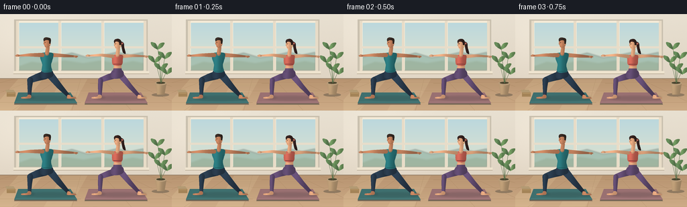
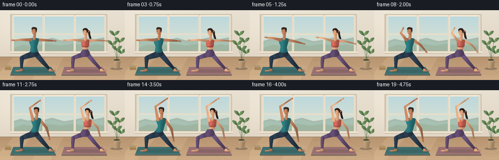

CODING AGENTS AS PIXEL WORLD MODELS
traex/GPT-6.1-Sol · instance_preservation_0030
点击播放 · 原生 RGB 像素
逐轮保存的候选
回放视频、检查图与代码变化。
每份候选均可单独播放。实际图片检查记录在下方工具轨迹中。
候选 01播放与检查图
点击播放 · 原生 RGB 像素


展开代码变化
--- 上一保存版本
+++ 本次保存版本
@@ -0,0 +1,230 @@
+from pathlib import Path
+import math
+import numpy as np
+from PIL import Image, ImageDraw, ImageFilter
+import artifact_io
+
+ROOT = Path(__file__).resolve().parent
+W,H,S = 256,144,4
+rng = np.random.default_rng(31)
+
+def xy(points): return [(int(x*S),int(y*S)) for x,y in points]
+def ellipse(d, box, fill): d.ellipse(tuple(int(a*S) for a in box),fill=fill)
+def line(d, pts, fill, width=1): d.line(xy(pts),fill=fill,width=max(1,int(width*S)),joint='curve')
+def poly(d,pts,fill): d.polygon(xy(pts),fill=fill)
+
+def smooth_polygon(pts, steps=8):
+ out=[]
+ for i in range(len(pts)):
+ p0=np.array(pts[(i-1)%len(pts)]);p1=np.array(pts[i]);p2=np.array(pts[(i+1)%len(pts)]);p3=np.array(pts[(i+2)%len(pts)])
+ for t in np.linspace(0,1,steps,endpoint=False):
+ q=.5*((2*p1)+(-p0+p2)*t+(2*p0-5*p1+4*p2-p3)*t*t+(-p0+3*p1-3*p2+p3)*t*t*t)
+ out.append(tuple(q))
+ return out
+
+def shaded(im, pts, base, light=.20, smooth=False):
+ if smooth: pts=smooth_polygon(pts)
+ mask=Image.new('L',im.size); d=ImageDraw.Draw(mask);poly(d,pts,255)
+ box=mask.getbbox()
+ if not box:return
+ x0,y0,x1,y1=box
+ yy,xx=np.mgrid[y0:y1,x0:x1]
+ u=(xx-x0)/max(1,x1-x0);v=(yy-y0)/max(1,y1-y0)
+ # Broad diffuse illumination and narrow reflected rim: light enters from upper left.
+ k=1+light*(.90*np.exp(-((u-.28)/.26)**2)-.55*u-.18*v)
+ col=np.clip(np.array(base)[None,None,:]*k[:,:,None],0,255).astype('uint8')
+ im.paste(Image.fromarray(col),(x0,y0),mask.crop(box))
+
+def tube(im, nodes, radii, color, light=.17):
+ nodes=[np.array(p,float) for p in nodes]
+ left=[];right=[]
+ # Continuous variable-radius limb, with rounded end caps.
+ for i,p in enumerate(nodes):
+ tangent=nodes[min(i+1,len(nodes)-1)]-nodes[max(0,i-1)]
+ tangent=tangent/(np.linalg.norm(tangent)+1e-9);normal=np.array([-tangent[1],tangent[0]])
+ left.append(tuple(p+normal*radii[i]));right.append(tuple(p-normal*radii[i]))
+ start=nodes[0];end=nodes[-1]
+ ts=nodes[1]-start;te=end-nodes[-2]
+ a=math.atan2(te[1],te[0]);b=math.atan2(ts[1],ts[0])
+ endcap=[tuple(end+radii[-1]*np.array([math.cos(a+math.pi/2-t),math.sin(a+math.pi/2-t)])) for t in np.linspace(0,math.pi,9)]
+ startcap=[tuple(start+radii[0]*np.array([math.cos(b-math.pi/2-t),math.sin(b-math.pi/2-t)])) for t in np.linspace(0,math.pi,9)]
+ shaded(im,left+endcap+right[::-1]+startcap,color,light)
+
+def background():
+ yy,xx=np.mgrid[0:H*S,0:W*S]
+ v=yy/(H*S)
+ base=np.stack([232-12*v,224-17*v,209-20*v],axis=-1)
+ glow=np.exp(-((xx/S-47)/90)**2-((yy/S-38)/55)**2)*9
+ base+=glow[:,:,None]
+ noise=rng.normal(0,.5,base.shape[:2]);base+=noise[:,:,None]
+ im=Image.fromarray(np.clip(base,0,255).astype('uint8'));d=ImageDraw.Draw(im)
+ # Architectural window recess and painted timber trim.
+ d.rectangle((21*S,8*S,220*S,88*S),fill=(201,192,174))
+ d.rectangle((24*S,10*S,217*S,85*S),fill=(245,235,215))
+ for x0,x1 in [(27,87),(91,151),(155,214)]:
+ sky=Image.new('RGB',((x1-x0)*S,71*S)); sy,sx=np.mgrid[0:71*S,0:(x1-x0)*S]
+ c=np.stack([188+sy/(71*S)*35,216+sy/(71*S)*11,221-sy/(71*S)*15],axis=-1)
+ sky=Image.fromarray(c.astype('uint8'));im.paste(sky,(x0*S,13*S))
+ d=ImageDraw.Draw(im)
+ # Soft distant landscape, continuous across the glass panes.
+ hills=Image.new('RGBA',im.size);hd=ImageDraw.Draw(hills)
+ poly(hd,[(27,74),(27,65),(42,60),(58,64),(74,59),(91,62),(107,58),(131,65),(151,62),(174,57),(194,61),(214,57),(214,84),(27,84)],(131,169,156,145))
+ poly(hd,[(27,78),(47,71),(72,74),(96,69),(124,73),(150,69),(178,74),(198,70),(214,73),(214,84),(27,84)],(120,152,131,155))
+ hills=hills.filter(ImageFilter.GaussianBlur(1.1*S));im=Image.alpha_composite(im.convert('RGBA'),hills).convert('RGB');d=ImageDraw.Draw(im)
+ for x in [24,87,151,214]:d.rectangle((x*S,10*S,(x+4)*S,85*S),fill=(232,220,199))
+ for x in [28,91,155]:line(d,[(x,12),(x,83)],(251,243,224),.7)
+ d.rectangle((24*S,48*S,218*S,51*S),fill=(231,221,202))
+ d.rectangle((20*S,85*S,222*S,89*S),fill=(239,228,207))
+ line(d,[(20,89),(222,89)],(177,163,141),.9)
+ # Warm oak floor perspective.
+ poly(d,[(0,96),(256,96),(256,144),(0,144)],(181,145,108))
+ for y in range(97,144):
+ t=(y-96)/48
+ line(d,[(0,y),(256,y)],(int(183+23*t),int(147+25*t),int(112+23*t)),1)
+ for y in [103,115,132]:
+ line(d,[(0,y),(256,y)],(158,124,89),.45)
+ line(d,[(0,y+.6),(256,y+.6)],(215,180,139),.35)
+ for xb in [-160,-70,18,107,196,285,374]:
+ line(d,[(128+(xb-128)*.36,96),(xb,144)],(165,130,94),.4)
+ for i in range(65):
+ y=rng.uniform(99,144);x=rng.uniform(0,256);ln=rng.uniform(6,29)
+ line(d,[(x,y),(min(256,x+ln),y+.1)],(int(185+(y-99)*.35),int(149+(y-99)*.35),int(112+(y-99)*.35)),.18)
+ line(d,[(0,96),(256,96)],(150,130,106),1)
+ # Cast sunlight, translucent strips from the window.
+ sunshine=Image.new('RGBA',im.size);sd=ImageDraw.Draw(sunshine)
+ poly(sd,[(27,97),(64,97),(24,144),(0,144),(0,128)],(255,235,184,34))
+ poly(sd,[(93,97),(130,97),(104,144),( sixty:=65,144)],(255,239,192,28))
+ im=Image.alpha_composite(im.convert('RGBA'),sunshine).convert('RGB');d=ImageDraw.Draw(im)
+ # Two separate nonslip yoga mats, in perspective.
+ for cx,col in [(70,(62,111,110)),(175,(153,112,113))]:
+ poly(d,[(cx-43,118),(cx+35,118),(cx+45,135),(cx-49,135)],(117,103,86))
+ poly(d,[(cx-43,117),(cx+35,117),(cx+45,133),(cx-49,133)],col)
+ line(d,[(cx-47,131),(cx+43,131)],tuple(min(255,c+24) for c in col),.5)
+ for k in range(12):
+ line(d,[(cx-40,119+k),(cx+35+k*.4,119+k)],tuple(c+3 for c in col),.15)
+ # A plant to the right and neatly stacked yoga blocks at left.
+ ellipse(d,(226,118,252,123),(143,121,96))
+ shaded(im,[(231,103),(248,103),(245,120),(234,120)],(172,143,108),.18)
+ d=ImageDraw.Draw(im);ellipse(d,(231,100,248,106),(185,157,122));ellipse(d,(233,101,246,104),(76,70,48))
+ for stem in [(240,78),(231,67),(246,61),(235,47),(249,84)]:
+ line(d,[(240,103),stem],(79,107,68),.65)
+ x,y=stem
+ shaded(im,[(x,y+6),(x-8,y+1),(x-10,y-5),(x-3,y-3),(x,y+4)],(91,124,80),.22,True)
+ shaded(im,[(x,y+6),(x+7,y+2),(x+10,y-4),(x+3,y-3),(x,y+4)],(103,139,87),.2,True)
+ d=ImageDraw.Draw(im)
+ poly(d,[(8,113),(20,113),(23,117),(10,117)],(179,154,115))
+ poly(d,[(10,117),(23,117),(23,123),(10,123)],(164,132,88))
+ line(d,[(11,118),(22,118)],(198,167,118),.7)
+ return im
+
+BG=background()
+
+def hand(im, wrist, direction, skin, raised=False):
+ v=np.array(direction,float);v/=np.linalg.norm(v);w=np.array(wrist)
+ end=w+v*3.4;n=np.array([-v[1],v[0]])
+ tube(im,[tuple(w),tuple(end)],[1.35,1.2],skin,.15)
+ d=ImageDraw.Draw(im)
+ for j in range(4):
+ a=end+n*(j-1.5)*.55
+ b=a+v*(2.1-.3*abs(j-1.5))
+ line(d,[tuple(a),tuple(b)],skin,.55)
+ tube(im,[tuple(w+v*.8+n),tuple(w+v*2.8+n*1.8)],[.58,.4],skin,.12)
+
+def person(im,cx,female,a,t):
+ skin=(188,125,90) if not female else (214,157,119)
+ skin_shadow=tuple(int(x*.90) for x in skin)
+ pants=(38,54,70) if not female else ( ninety:=90, seventy:=70,104)
+ shirt=(39,110,114) if not female else (188,93,79)
+ bob=.32*math.sin(t*2*math.pi/4.8)
+ hip=np.array([cx,90+bob])
+ shoulder=np.array([cx+5*a,60+(2 if female else 0)+bob])
+ head=np.array([shoulder[0]+.2,43+(2 if female else 0)+bob+.3*a])
+ # Contact shadows on the mat.
+ shadow=Image.new('RGBA',im.size);sd=ImageDraw.Draw(shadow)
+ ellipse(sd,(cx-37,122,cx+42,129),(35,38,39,40));ellipse(sd,(cx-31,122,cx-18,127),(27,30,30,55));ellipse(sd,(cx+28,122,cx+43,128),(27,30,30,55))
+ shadow=shadow.filter(ImageFilter.GaussianBlur(1.2*S));im.paste(Image.alpha_composite(im.convert('RGBA'),shadow).convert('RGB'))
+ # Back straight leg with a stable bare foot.
+ hback=(cx+4,90+bob);kback=(cx+19,108);ankback=(cx+33,123)
+ tube(im,[hback,kback,ankback],[5.6 if not female else 4.6,4.3 if not female else 3.5,2.3],pants,.27)
+ shaded(im,[(cx+31,120.7),(cx+35,121.5),(cx+36,123.7),(cx+42,124.2),(cx+43,126),(cx+31,126),(cx+29.8,124.5)],skin,.17,True)
+ # Foreground bent leg. Knee stacks directly over the ankle.
+ hfront=(cx-3,91+bob);kfront=(cx-25,98.5);ankfront=(cx-26,122.5)
+ tube(im,[hfront,(cx-14,94.3+bob),kfront],[6.3 if not female else 5.1,5.5 if not female else 4.5,4.3 if not female else 3.6],pants,.28)
+ tube(im,[kfront,(cx-25.7,109),ankfront],[4.3 if not female else 3.6,3.3,2.3],pants,.25)
+ shaded(im,[(cx-28.2,120.5),(cx-24.2,121),(cx-24.6,125.5),(cx-37,126),(cx-38.4,125.2),(cx-37.7,124.1),(cx-30,123)],skin,.16,True)
+ d=ImageDraw.Draw(im)
+ line(d,[(cx-35.7,124.4),(cx-35.9,125.5)],skin_shadow,.35)
+ # Waist and pelvic shape.
+ shaded(im,[(cx-7,84+bob),(cx+7,84+bob),(cx+9,92+bob),(cx+2,96+bob),(cx-7,96+bob),(cx-10,92+bob)],pants,.22,True)
+ # The rear arm lowers to the rear thigh during the side bend.
+ rs=shoulder+np.array([7,1]); re=np.array([cx+24+2*a,62+18*a+bob]);rw=np.array([cx+41-11*a,63+39*a+bob])
+ tube(im,[tuple(rs),tuple(re),tuple(rw)],[3.15 if not female else 2.6,2.5 if not female else 2,1.35],skin_shadow,.20)
+ hand(im,rw,rw-re,skin_shadow)
+ # Torso, contoured sportswear. Small midriff on the woman.
+ sx,sy=shoulder
+ if female:
+ shaded(im,[(sx-6,sy+1),(sx+7,sy+1),(sx+6,sy+15),(cx+5,84+bob),(cx-6,84+bob),(sx-5,sy+14)],skin,.18,True)
+ shaded(im,[(sx-6,sy-1),(sx+7,sy-1),(sx+8,sy+5),(sx+6,sy+14),(sx-6,sy+14),(sx-8,sy+6)],shirt,.26,True)
+ d=ImageDraw.Draw(im)
+ line(d,[(sx-6,sy+12.5),(sx+6,sy+12.5)],(131, sixty2:=60,59),1)
+ shaded(im,[(cx-6,81+bob),(cx+6,81+bob),(cx+7,87+bob),(cx-7,87+bob)],pants,.2)
+ else:
+ shaded(im,[(sx-8,sy-2),(sx+8,sy-2),(sx+9,sy+5),(sx+6,sy+16),(cx+7,86+bob),(cx-7,86+bob),(sx-7,sy+15),(sx-10,sy+5)],shirt,.25,True)
+ d=ImageDraw.Draw(im)
+ line(d,[(sx+6,sy+6),(cx+4,83+bob)],(27, eighty:=80,83),.55)
+ line(d,[(cx-6,85+bob),(cx+6,85+bob)],(25,78,83),.7)
+ # Neck emerges through the neckline.
+ hx,hy=head
+ tube(im,[(hx+1,hy+7),(sx,sy-1)],[2.7,3.0],skin,.15)
+ d=ImageDraw.Draw(im)
+ line(d,[(sx-4,sy-.5),(sx,sy+1.1),(sx+4,sy-.5)],(129,64,55) if female else (28,86,91),.7)
+ # Ponytail, behind the face, visibly stable across the shot.
+ if female:
+ shaded(im,[(hx+4,hy-4),(hx+9,hy-2),(hx+10,hy+5),(hx+12,hy+14),(hx+8,hy+12),(hx+6,hy+4)],(47, thirty:=31,29),.30,True)
+ d=ImageDraw.Draw(im);ellipse(d,(hx+5.5,hy-2.5,hx+8.5,hy),(166,95,81))
+ # Face in three-quarter profile, looking toward the extended front hand.
+ face=[(hx-4.4,hy-5.8),(hx+2.5,hy-6.4),(hx+5,hy-3),(hx+4.4,hy+4),(hx+1,hy+7.8),(hx-2.8,hy+6.3),(hx-4.5,hy+2.3),(hx-5.4,hy+1.4),(hx-5,hy-.1)]
+ shaded(im,face,skin,.19,True)
+ d=ImageDraw.Draw(im)
+ ellipse(d,(hx+2.8,hy-.5,hx+5.3,hy+3.2),tuple(min(255,x+9) for x in skin))
+ line(d,[(hx+3.5,hy+.4),(hx+4,hy+1.5),(hx+3.3,hy+2)],skin_shadow,.4)
+ # Short swept hair versus a gathered bun/ponytail hairstyle.
+ if female:
+ hair=[(hx-4.6,hy-1.6),(hx-5.2,hy-5.3),(hx-2.9,hy-7.6),(hx+1.8,hy-8),(hx+5.2,hy-5.1),(hx+5,hy+.2),(hx+3.1,hy+1),(hx+2,hy-3.1),(hx-2.4,hy-4.1)]
+ shaded(im,hair,(49,32,29),.25,True)
+ else:
+ hair=[(hx-4.8,hy-2.7),(hx-5,hy-6.4),(hx-2.1,hy-8.2),(hx+2.2,hy-7.7),(hx+5.4,hy-5.8),(hx+5.1,hy+.5),(hx+3.3,hy+1),(hx+2.6,hy-3.6),(hx-1.4,hy-4.2)]
+ shaded(im,hair,( fifty:=50,39,33),.28,True)
+ d=ImageDraw.Draw(im)
+ line(d,[(hx-3.8,hy-1.7),(hx-1.7,hy-1.5)],(66,43,35),.5)
+ line(d,[(hx-3.8,hy-.5),(hx-2,hy-.3)],(49,40,35),.42)
+ ellipse(d,(hx-3.3,hy-.7,hx-2.75,hy+.05),(36, thirtyone:=31,28))
+ line(d,[(hx-4.25,hy+.2),(hx-4.8,hy+2.1),(hx-3.65,hy+2.5)],tuple(int(x*.8) for x in skin),.32)
+ line(d,[(hx-3.35,hy+4.5),(hx-1.5,hy+4.6)],(128, seventyfive:=75,65),.4)
+ if not female:
+ line(d,[(hx-3,hy+5.2),(hx-.7,hy+6.4),(hx+2,hy+5.6)],(118,84, sixty3:=63),.45)
+ else:
+ ellipse(d,(hx+3.5,hy+2,hx+4.35,hy+2.85),(226,196,115))
+ # Front arm swings smoothly overhead into reverse warrior.
+ ls=shoulder+np.array([-7,1])
+ le=np.array([cx-25+18*a,61-27*a+bob]);lw=np.array([cx-42+57*a,62-43*a+bob])
+ tube(im,[tuple(ls),tuple(le),tuple(lw)],[3.25 if not female else 2.6,2.35 if not female else 1.95,1.25],skin,.22)
+ hand(im,lw,lw-le,skin,True)
+ # Fine cloth folds and specular edge, sparse at this image scale.
+ d=ImageDraw.Draw(im)
+ line(d,[(cx-22,97.4),(cx-26.5,99)],tuple(int(x*1.22) for x in pants),.45)
+ line(d,[(cx+14,103),(cx+22,112)],tuple(int(x*1.16) for x in pants),.4)
+ return im
+
+frames=[]
+for i in range(20):
+ t=i/4
+ # Hold Warrior II, flow into Reverse Warrior, then settle into the stretch.
+ q=max(0,min(1,(t-.65)/2.6));a=q*q*(3-2*q)
+ im=BG.copy()
+ person(im,70,False,a,t)
+ person(im,175,True,a,t+.18)
+ im=im.resize((W,H),Image.Resampling.LANCZOS)
+ frames.append(np.asarray(im,dtype=np.uint8))
+artifact_io.save(np.stack(frames),ROOT)
+print('Saved',len(frames),'RGB frames')
可观测工具轨迹
实际执行的命令与返回图片。
命令 1exit 0
/bin/bash -lc 'ls -la && cat prompt.txt && cat GENERATION_RULES.md && cat task_spec.json'
命令 2exit 0
/bin/bash -lc 'cat artifact_io.py'
命令 3exit 0
/bin/bash -lc "cat > generate.py <<'PY'
from pathlib import Path
import math
import numpy as np
from PIL import Image, ImageDraw, ImageFilter
import artifact_io
ROOT = Path(__file__).resolve().parent
W,H,S = 256,144,4
rng = np.random.default_rng(31)
def xy(points): return [(int(x*S),int(y*S)) for x,y in points]
def ellipse(d, box, fill): d.ellipse(tuple(int(a*S) for a in box),fill=fill)
def line(d, pts, fill, width=1): d.line(xy(pts),fill=fill,width=max(1,int(width*S)),joint='curve')
def poly(d,pts,fill): d.polygon(xy(pts),fill=fill)
def smooth_polygon(pts, steps=8):
out=[]
for i in range(len(pts)):
p0=np.array(pts[(i-1)%len(pts)]);p1=np.array(pts[i]);p2=np.array(pts[(i+1)%len(pts)]);p3=np.array(pts[(i+2)%len(pts)])
for t in np.linspace(0,1,steps,endpoint=False):
q=.5*((2*p1)+(-p0+p2)*t+(2*p0-5*p1+4*p2-p3)*t*t+(-p0+3*p1-3*p2+p3)*t*t*t)
out.append(tuple(q))
return out
def shaded(im, pts, base, light=.20, smooth=False):
if smooth: pts=smooth_polygon(pts)
mask=Image.new('L',im.size); d=ImageDraw.Draw(mask);poly(d,pts,255)
box=mask.getbbox()
if not box:return
x0,y0,x1,y1=box
yy,xx=np.mgrid[y0:y1,x0:x1]
u=(xx-x0)/max(1,x1-x0);v=(yy-y0)/max(1,y1-y0)
# Broad diffuse illumination and narrow reflected rim: light enters from upper left.
k=1+light*(.90*np.exp(-((u-.28)/.26)**2)-.55*u-.18*v)
col=np.clip(np.array(base)[None,None,:]*k[:,:,None],0,255).astype('uint8')
im.paste(Image.fromarray(col),(x0,y0),mask.crop(box))
def tube(im, nodes, radii, color, light=.17):
nodes=[np.array(p,float) for p in nodes]
left=[];right=[]
# Continuous variable-radius limb, with rounded end caps.
for i,p in enumerate(nodes):
tangent=nodes[min(i+1,len(nodes)-1)]-nodes[max(0,i-1)]
tangent=tangent/(np.linalg.norm(tangent)+1e-9);normal=np.array([-tangent[1],tangent[0]])
left.append(tuple(p+normal*radii[i]));right.append(tuple(p-normal*radii[i]))
start=nodes[0];end=nodes[-1]
ts=nodes[1]-start;te=end-nodes[-2]
a=math.atan2(te[1],te[0]);b=math.atan2(ts[1],ts[0])
endcap=[tuple(end+radii[-1]*np.array([math.cos(a+math.pi/2-t),math.sin(a+math.pi/2-t)])) for t in np.linspace(0,math.pi,9)]
startcap=[tuple(start+radii[0]*np.array([math.cos(b-math.pi/2-t),math.sin(b-math.pi/2-t)])) for t in np.linspace(0,math.pi,9)]
shaded(im,left+endcap+right[::-1]+startcap,color,light)
def background():
yy,xx=np.mgrid[0:H*S,0:W*S]
v=yy/(H*S)
base=np.stack([232-12*v,224-17*v,209-20*v],axis=-1)
glow=np.exp(-((xx/S-47)/90)**2-((yy/S-38)/55)**2)*9
base+=glow[:,:,None]
noise=rng.normal(0,.5,base.shape[:2]);base+=noise[:,:,None]
im=Image.fromarray(np.clip(base,0,255).astype('uint8'));d=ImageDraw.Draw(im)
# Architectural window recess and painted timber trim.
d.rectangle((21*S,8*S,220*S,88*S),fill=(201,192,174))
d.rectangle((24*S,10*S,217*S,85*S),fill=(245,235,215))
for x0,x1 in [(27,87),(91,151),(155,214)]:
sky=Image.new('RGB',((x1-x0)*S,71*S)); sy,sx=np.mgrid[0:71*S,0:(x1-x0)*S]
c=np.stack([188+sy/(71*S)*35,216+sy/(71*S)*11,221-sy/(71*S)*15],axis=-1)
sky=Image.fromarray(c.astype('uint8'));im.paste(sky,(x0*S,13*S))
d=ImageDraw.Draw(im)
# Soft distant landscape, continuous across the glass panes.
hills=Image.new('RGBA',im.size);hd=ImageDraw.Draw(hills)
poly(hd,[(27,74),(27,65),(42,60),(58,64),(74,59),(91,62),(107,58),(131,65),(151,62),(174,57),(194,61),(214,57),(214,84),(27,84)],(131,169,156,145))
poly(hd,[(27,78),(47,71),(72,74),(96,69),(124,73),(150,69),(178,74),(198,70),(214,73),(214,84),(27,84)],(120,152,131,155))
hills=hills.filter(ImageFilter.GaussianBlur(1.1*S));im=Image.alpha_composite(im.convert('RGBA'),hills).convert('RGB');d=ImageDraw.Draw(im)
for x in [24,87,151,214]:d.rectangle((x*S,10*S,(x+4)*S,85*S),fill=(232,220,199))
for x in [28,91,155]:line(d,[(x,12),(x,83)],(251,243,224),.7)
d.rectangle((24*S,48*S,218*S,51*S),fill=(231,221,202))
d.rectangle((20*S,85*S,222*S,89*S),fill=(239,228,207))
line(d,[(20,89),(222,89)],(177,163,141),.9)
# Warm oak floor perspective.
poly(d,[(0,96),(256,96),(256,144),(0,144)],(181,145,108))
for y in range(97,144):
t=(y-96)/48
line(d,[(0,y),(256,y)],(int(183+23*t),int(147+25*t),int(112+23*t)),1)
for y in [103,115,132]:
line(d,[(0,y),(256,y)],(158,124,89),.45)
line(d,[(0,y+.6),(256,y+.6)],(215,180,139),.35)
for xb in [-160,-70,18,107,196,285,374]:
line(d,[(128+(xb-128)*.36,96),(xb,144)],(165,130,94),.4)
for i in range(65):
y=rng.uniform(99,144);x=rng.uniform(0,256);ln=rng.uniform(6,29)
line(d,[(x,y),(min(256,x+ln),y+.1)],(int(185+(y-99)*.35),int(149+(y-99)*.35),int(112+(y-99)*.35)),.18)
line(d,[(0,96),(256,96)],(150,130,106),1)
# Cast sunlight, translucent strips from the window.
sunshine=Image.new('RGBA',im.size);sd=ImageDraw.Draw(sunshine)
poly(sd,[(27,97),(64,97),(24,144),(0,144),(0,128)],(255,235,184,34))
poly(sd,[(93,97),(130,97),(104,144),( sixty:=65,144)],(255,239,192,28))
im=Image.alpha_composite(im.convert('RGBA'),sunshine).convert('RGB');d=ImageDraw.Draw(im)
# Two separate nonslip yoga mats, in perspective.
for cx,col in [(70,(62,111,110)),(175,(153,112,113))]:
poly(d,[(cx-43,118),(cx+35,118),(cx+45,135),(cx-49,135)],(117,103,86))
poly(d,[(cx-43,117),(cx+35,117),(cx+45,133),(cx-49,133)],col)
line(d,[(cx-47,131),(cx+43,131)],tuple(min(255,c+24) for c in col),.5)
for k in range(12):
line(d,[(cx-40,119+k),(cx+35+k*.4,119+k)],tuple(c+3 for c in col),.15)
# A plant to the right and neatly stacked yoga blocks at left.
ellipse(d,(226,118,252,123),(143,121,96))
shaded(im,[(231,103),(248,103),(245,120),(234,120)],(172,143,108),.18)
d=ImageDraw.Draw(im);ellipse(d,(231,100,248,106),(185,157,122));ellipse(d,(233,101,246,104),(76,70,48))
for stem in [(240,78),(231,67),(246,61),(235,47),(249,84)]:
line(d,[(240,103),stem],(79,107,68),.65)
x,y=stem
shaded(im,[(x,y+6),(x-8,y+1),(x-10,y-5),(x-3,y-3),(x,y+4)],(91,124,80),.22,True)
shaded(im,[(x,y+6),(x+7,y+2),(x+10,y-4),(x+3,y-3),(x,y+4)],(103,139,87),.2,True)
d=ImageDraw.Draw(im)
poly(d,[(8,113),(20,113),(23,117),(10,117)],(179,154,115))
poly(d,[(10,117),(23,117),(23,123),(10,123)],(164,132,88))
line(d,[(11,118),(22,118)],(198,167,118),.7)
return im
BG=background()
def hand(im, wrist, direction, skin, raised=False):
v=np.array(direction,float);v/=np.linalg.norm(v);w=np.array(wrist)
end=w+v*3.4;n=np.array([-v[1],v[0]])
tube(im,[tuple(w),tuple(end)],[1.35,1.2],skin,.15)
d=ImageDraw.Draw(im)
for j in range(4):
a=end+n*(j-1.5)*.55
b=a+v*(2.1-.3*abs(j-1.5))
line(d,[tuple(a),tuple(b)],skin,.55)
tube(im,[tuple(w+v*.8+n),tuple(w+v*2.8+n*1.8)],[.58,.4],skin,.12)
def person(im,cx,female,a,t):
skin=(188,125,90) if not female else (214,157,119)
skin_shadow=tuple(int(x*.90) for x in skin)
pants=(38,54,70) if not female else ( ninety:=90, seventy:=70,104)
shirt=(39,110,114) if not female else (188,93,79)
bob=.32*math.sin(t*2*math.pi/4.8)
hip=np.array([cx,90+bob])
shoulder=np.array([cx+5*a,60+(2 if female else 0)+bob])
head=np.array([shoulder[0]+.2,43+(2 if female else 0)+bob+.3*a])
# Contact shadows on the mat.
shadow=Image.new('RGBA',im.size);sd=ImageDraw.Draw(shadow)
ellipse(sd,(cx-37,122,cx+42,129),(35,38,39,40));ellipse(sd,(cx-31,122,cx-18,127),(27,30,30,55));ellipse(sd,(cx+28,122,cx+43,128),(27,30,30,55))
shadow=shadow.filter(ImageFilter.GaussianBlur(1.2*S));im.paste(Image.alpha_composite(im.convert('RGBA'),shadow).convert('RGB'))
# Back straight leg with a stable bare foot.
hback=(cx+4,90+bob);kback=(cx+19,108);ankback=(cx+33,123)
tube(im,[hback,kback,ankback],[5.6 if not female else 4.6,4.3 if not female else 3.5,2.3],pants,.27)
shaded(im,[(cx+31,120.7),(cx+35,121.5),(cx+36,123.7),(cx+42,124.2),(cx+43,126),(cx+31,126),(cx+29.8,124.5)],skin,.17,True)
# Foreground bent leg. Knee stacks directly over the ankle.
hfront=(cx-3,91+bob);kfront=(cx-25,98.5);ankfront=(cx-26,122.5)
tube(im,[hfront,(cx-14,94.3+bob),kfront],[6.3 if not female else 5.1,5.5 if not female else 4.5,4.3 if not female else 3.6],pants,.28)
tube(im,[kfront,(cx-25.7,109),ankfront],[4.3 if not female else 3.6,3.3,2.3],pants,.25)
shaded(im,[(cx-28.2,120.5),(cx-24.2,121),(cx-24.6,125.5),(cx-37,126),(cx-38.4,125.2),(cx-37.7,124.1),(cx-30,123)],skin,.16,True)
d=ImageDraw.Draw(im)
line(d,[(cx-35.7,124.4),(cx-35.9,125.5)],skin_shadow,.35)
# Waist and pelvic shape.
shaded(im,[(cx-7,84+bob),(cx+7,84+bob),(cx+9,92+bob),(cx+2,96+bob),(cx-7,96+bob),(cx-10,92+bob)],pants,.22,True)
# The rear arm lowers to the rear thigh during the side bend.
rs=shoulder+np.array([7,1]); re=np.array([cx+24+2*a,62+18*a+bob]);rw=np.array([cx+41-11*a,63+39*a+bob])
tube(im,[tuple(rs),tuple(re),tuple(rw)],[3.15 if not female else 2.6,2.5 if not female else 2,1.35],skin_shadow,.20)
hand(im,rw,rw-re,skin_shadow)
# Torso, contoured sportswear. Small midriff on the woman.
sx,sy=shoulder
if female:
shaded(im,[(sx-6,sy+1),(sx+7,sy+1),(sx+6,sy+15),(cx+5,84+bob),(cx-6,84+bob),(sx-5,sy+14)],skin,.18,True)
shaded(im,[(sx-6,sy-1),(sx+7,sy-1),(sx+8,sy+5),(sx+6,sy+14),(sx-6,sy+14),(sx-8,sy+6)],shirt,.26,True)
d=ImageDraw.Draw(im)
line(d,[(sx-6,sy+12.5),(sx+6,sy+12.5)],(131, sixty2:=60,59),1)
shaded(im,[(cx-6,81+bob),(cx+6,81+bob),(cx+7,87+bob),(cx-7,87+bob)],pants,.2)
else:
shaded(im,[(sx-8,sy-2),(sx+8,sy-2),(sx+9,sy+5),(sx+6,sy+16),(cx+7,86+bob),(cx-7,86+bob),(sx-7,sy+15),(sx-10,sy+5)],shirt,.25,True)
d=ImageDraw.Draw(im)
line(d,[(sx+6,sy+6),(cx+4,83+bob)],(27, eighty:=80,83),.55)
line(d,[(cx-6,85+bob),(cx+6,85+bob)],(25,78,83),.7)
# Neck emerges through the neckline.
hx,hy=head
tube(im,[(hx+1,hy+7),(sx,sy-1)],[2.7,3.0],skin,.15)
d=ImageDraw.Draw(im)
line(d,[(sx-4,sy-.5),(sx,sy+1.1),(sx+4,sy-.5)],(129,64,55) if female else (28,86,91),.7)
# Ponytail, behind the face, visibly stable across the shot.
if female:
shaded(im,[(hx+4,hy-4),(hx+9,hy-2),(hx+10,hy+5),(hx+12,hy+14),(hx+8,hy+12),(hx+6,hy+4)],(47, thirty:=31,29),.30,True)
d=ImageDraw.Draw(im);ellipse(d,(hx+5.5,hy-2.5,hx+8.5,hy),(166,95,81))
# Face in three-quarter profile, looking toward the extended front hand.
face=[(hx-4.4,hy-5.8),(hx+2.5,hy-6.4),(hx+5,hy-3),(hx+4.4,hy+4),(hx+1,hy+7.8),(hx-2.8,hy+6.3),(hx-4.5,hy+2.3),(hx-5.4,hy+1.4),(hx-5,hy-.1)]
shaded(im,face,skin,.19,True)
d=ImageDraw.Draw(im)
ellipse(d,(hx+2.8,hy-.5,hx+5.3,hy+3.2),tuple(min(255,x+9) for x in skin))
line(d,[(hx+3.5,hy+.4),(hx+4,hy+1.5),(hx+3.3,hy+2)],skin_shadow,.4)
# Short swept hair versus a gathered bun/ponytail hairstyle.
if female:
hair=[(hx-4.6,hy-1.6),(hx-5.2,hy-5.3),(hx-2.9,hy-7.6),(hx+1.8,hy-8),(hx+5.2,hy-5.1),(hx+5,hy+.2),(hx+3.1,hy+1),(hx+2,hy-3.1),(hx-2.4,hy-4.1)]
shaded(im,hair,(49,32,29),.25,True)
else:
hair=[(hx-4.8,hy-2.7),(hx-5,hy-6.4),(hx-2.1,hy-8.2),(hx+2.2,hy-7.7),(hx+5.4,hy-5.8),(hx+5.1,hy+.5),(hx+3.3,hy+1),(hx+2.6,hy-3.6),(hx-1.4,hy-4.2)]
shaded(im,hair,( fifty:=50,39,33),.28,True)
d=ImageDraw.Draw(im)
line(d,[(hx-3.8,hy-1.7),(hx-1.7,hy-1.5)],(66,43,35),.5)
line(d,[(hx-3.8,hy-.5),(hx-2,hy-.3)],(49,40,35),.42)
ellipse(d,(hx-3.3,hy-.7,hx-2.75,hy+.05),(36, thirtyone:=31,28))
line(d,[(hx-4.25,hy+.2),(hx-4.8,hy+2.1),(hx-3.65,hy+2.5)],tuple(int(x*.8) for x in skin),.32)
line(d,[(hx-3.35,hy+4.5),(hx-1.5,hy+4.6)],(128, seventyfive:=75,65),.4)
if not female:
line(d,[(hx-3,hy+5.2),(hx-.7,hy+6.4),(hx+2,hy+5.6)],(118,84, sixty3:=63),.45)
else:
ellipse(d,(hx+3.5,hy+2,hx+4.35,hy+2.85),(226,196,115))
# Front arm swings smoothly overhead into reverse warrior.
ls=shoulder+np.array([-7,1])
le=np.array([cx-25+18*a,61-27*a+bob]);lw=np.array([cx-42+57*a,62-43*a+bob])
tube(im,[tuple(ls),tuple(le),tuple(lw)],[3.25 if not female else 2.6,2.35 if not female else 1.95,1.25],skin,.22)
hand(im,lw,lw-le,skin,True)
# Fine cloth folds and specular edge, sparse at this image scale.
d=ImageDraw.Draw(im)
line(d,[(cx-22,97.4),(cx-26.5,99)],tuple(int(x*1.22) for x in pants),.45)
line(d,[(cx+14,103),(cx+22,112)],tuple(int(x*1.16) for x in pants),.4)
return im
frames=[]
for i in range(20):
t=i/4
# Hold Warrior II, flow into Reverse Warrior, then settle into the stretch.
q=max(0,min(1,(t-.65)/2.6));a=q*q*(3-2*q)
im=BG.copy()
person(im,70,False,a,t)
person(im,175,True,a,t+.18)
im=im.resize((W,H),Image.Resampling.LANCZOS)
frames.append(np.asarray(im,dtype=np.uint8))
artifact_io.save(np.stack(frames),ROOT)
print('Saved',len(frames),'RGB frames')
PY
python generate.py"命令 4exit 0
/bin/bash -lc "python - <<'PY'
from pathlib import Path
p=Path('generate.py')
s=p.read_text()
for old,new in {'sixty:=65':'65','ninety:=90':'90','seventy:=70':'70','sixty2:=60':'60','eighty:=80':'80','thirty:=31':'31','fifty:=50':'50','thirtyone:=31':'31','seventyfive:=75':'75','sixty3:=63':'63'}.items():s=s.replace(old,new)
p.write_text(s)
import numpy as np
p=np.load('pixels.npz')['pixels']
print('pixels:',p.shape,p.dtype)
for f in ['generate.py','pixels.npz','index.html','inspection.png','frames/00.png','frames/19.png']:
print(f,Path(f).stat().st_size)
PY"视觉工具实际返回图片 1

保存候选 1 份；完成命令 4 次；可验证图片返回 1 张。原始 API 响应与完整日志保留在本地。